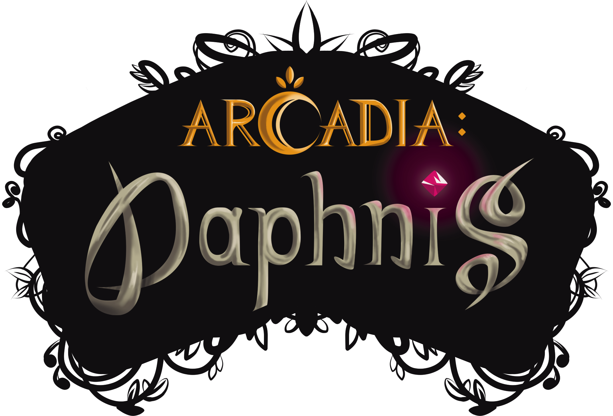
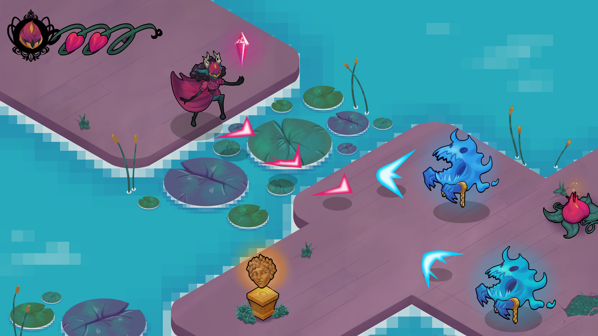
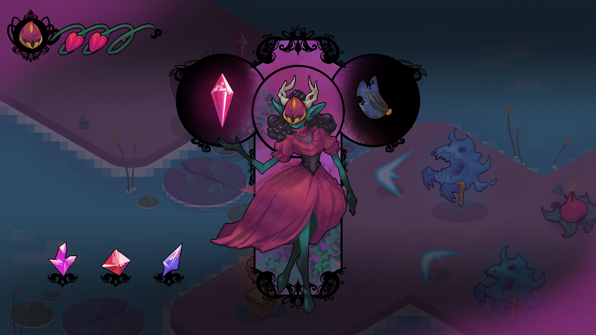

Con foco en la representación genuina de comunidades históricamente silenciadas, Illusions Media es una empresa de cine y videojuegos conformada enteramente por mujeres y disidencias. Fundada por Camila Bentancur en 2005 (Docente en la Universidad Tecnológica, Lic. en Comunicación y financiada por Fulbright para estudiar su Maestría en Estados Unidos) la productora ha recibido selecciones en eventos internacionales como MAFICI en Argentina, Mercado entre Fronteras en Brasil, Rocaberti en España, Ícaro en Guatemala y el +MALA del Festival Llamale H. También ha sido premiada en New York New Stories, Arca Conecta, Recam, Punctum Sales y Artis Consultora.

"Disfruta de los hermosos paisajes, del canto de las aves y de la música. Enamórate y busca tu lugar en el mundo. Crea arte y equivócate, y vuelve a equivocarte. Y vuelve a enamorarte de las personas y del mundo, una y otra vez. Pero incluso aquí, en Arcadia, puedes encontrarme."


El juego se divide en dos etapas, las mazmorras donde te dedicas a luchar contra espíritus para ayudarlos a descansar y el jardín, donde gestionas los recursos que consigues en combates, socializas con los personajes del juego y puedes personalizar a tu personaje y su entorno.
El combate es roguelike, inspirado en The Binding of Isaac o Cult of the Lamb, con cada partida siendo una experiencia independiente y salas generadas aleatoriamente. Podrás desbloquear objetos, personajes, rutas y jefes que podrás encontrar en subsecuentes partidas. Encontrarás mejoras para tu cristal, tu arma, y máscaras que te darán distintas posturas de combate.
En el jardín podrás interactuar con los personajes que desbloquees en un sistema de amistad, que te ayudará a progresar en distintas rutas de las mazmorras o a encontrar objetos nuevos. También podrás personalizar a Daphnis y el mismo jardín.
Con la preventa del juego tendrás acceso a un libro de arte conceptual, una remera y una tote bag, además de un código de Steam para descargar el juego en su lanzamiento. Consigue la versión especial de Arcadia: Daphnis aquí.
Fecha de salida: 20/02/2027